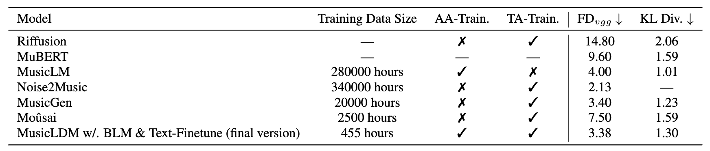

Demo
We present all of MusicLDM's demos on [this extra page], please refer the hyperlink for it.
Training Details and Hyperparameters of MusicLDM
For audio signal processing, we use the sampling rate of 16 kHz to convert all music samples for the training of MusicLDM. Each input data is a chunk of 10.24 seconds randomly selected from the dataset, i.e., L=163840. We use the hop size 160, the window size 1024, the filter length 1024, and the number of mel-bins 128 to compute the short-time Fourier transform (STFT) and mel-spectrograms. As the result, the input mel-spectrogram has the time frame T=1024 and the mel-bins F=128.
We adopt a convolutional VAE as the latent audio representation model, consisting of a 4-block downsampling encoder and a 4-block upsampling decoder. The downsampling and upsampling rate P=8 and the latent dimension C=16, i.e., the bottleneck latent variable y has a shape of (16, 128, 16). For the latent diffusion model, we refer the UNet latent diffusion model. It contains 4 encoder blocks, 1 bottleneck block, and 4 decoder blocks. Each block contains 2 residual CNN layers and 1 spatial transformer layer. The channel dimensions of encoder blocks are 128, 256, 384, 640 and reversed in decoder blocks. For Hifi-GAN, we adopt its official repository along with the configuration. We change the number of mel-bins to 128 to fit the processing of MusicLDM.
For the training of VAE, we use the Adam optimizer with a learning rate of 0.0000045 with a batch size of 24. We apply the mel-spectrogram loss, adversarial loss, and a Gaussian constraint loss as the training object of VAE. For the training of Hifi-GAN, we use the batch size of 96 and the AdamW optimizer with beta_1=0.8, beta_2=0.99 at the learning rate of 0.0002. For the training of MusicLDM, we use the batch size of 24 and the AdamW optimizer with the basic learning of 0.00003. In the forward process, we use 1000-step of a linear noise schedule from beta_1=0.0015 to beta_1000=0.0195. In the sampling process, we use the DDIM sampler with 200 steps. We adopt the classifier-free guidance with a guidance scale w=2.0. When applying the mixup strategy, we use the mixup rate p=0.5. The CLAP model is trained on 24 A100 GPUs. The VAE and HifiGAN model are trained on 4 A60 GPUs. Last, the latent diffusion model is trained on single NVIDIA A40. All models are converged at the end of the training.
Evaluation on MusicCaps Dataset
We additionally evaluate MusicLDM on the MusicCaps dataset, which contains 5521 music samples with captions. Since many performance reports from MusicCaps are hard to be re-implemented (either missing of the training/inference code or due to the un-accesss of datasets), we compare our MusicLDM results with the reported perfomrnace in previous papers, namely Riffuion, MuBERT, MusicLDM, Mousai, MusicGen, and Noise2Music. The metrics are Frechet Distance (FD_vgg) and KL Divergence (KL Div), while we also report other metrics on the Audiostock dataset in the paper submission.
By combining the above table and Table 1 in the paper, we can conclude that MusicLDM achieves the compatible music generation performance mainly in terms of the audio quality with ony 455 hours training data. It is worth to note that MusicLDM does not achieve the best performance on the MusicCaps dataset, because of it scarcity on the training data and the missing of AudioSet in the training data. The performance of Frechet Distance and KL Divergence is largely depend on the distribution of its data. As many previous models, such as MusicLM and MusicGen use either Youtube or AudioSet-Source-Like datasets as the training data, they will achieve better performance. Another reason is due to the size of the training data, as MusicLDM is only trained with 455 hours of music. By looking at Table 1 for the result on Auiostock, we can observate a similar but superior performance of MusicLDM on the Audiostock evaluation set.